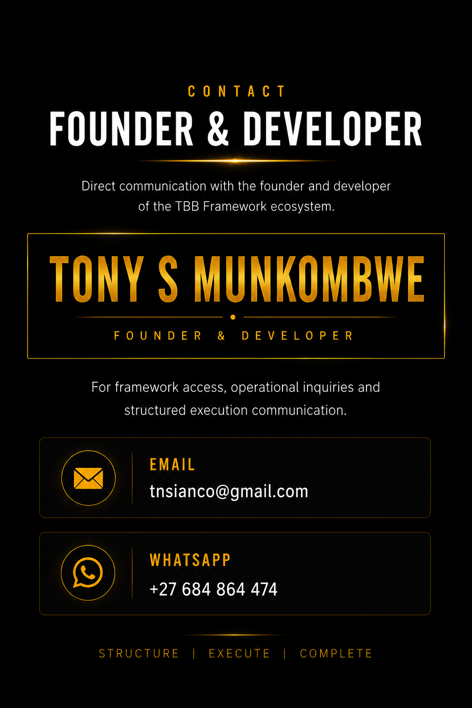

<!DOCTYPE html>
<html>
<head>
  <title>Contact | TBB Framework</title>
<head>
  <title>Page Name</title>
  <link rel="stylesheet" href="style.css">
</head>

</body>
</html>
<section class="section center">

Founder</h1>


<h2>About The Founder</h2>

<p>
The TBB Ecosystem was developed through years of observing structured numerical environments, progression behaviour and execution continuity.
</p>

<p>
Rather than focusing solely on outcomes, the founder became increasingly interested in the underlying structures that repeatedly appeared within operational environments. This pursuit led to the development of a framework centered on disciplined observation, structured positioning and controlled execution.
</p>

<p>
What began as a personal study of patterns, progression and exposure management gradually evolved into a broader operational philosophy known today as the TBB Framework.
</p>

<p>
The ecosystem is built on a simple principle:
</p>

<p>
"The objective is not merely to observe outcomes.
The objective is to understand the source structures that produce them."
</p>

<p>
Today, the TBB Ecosystem serves as a structured environment where observers can explore doctrine principles, execution psychology, operational continuity and framework-based thinking.
</p>

<p class="highlight">
STRUCTURE • EXECUTE • COMPLETE
</p>

<h2>Contact</h2>

<p>
Phone: +27 68694474
</p>
  style="
width:90%;
max-width:900px;
display:block;
margin:40px auto;
border-radius:18px;
box-shadow:0 0 40px rgba(0,0,0,0.5);
">
